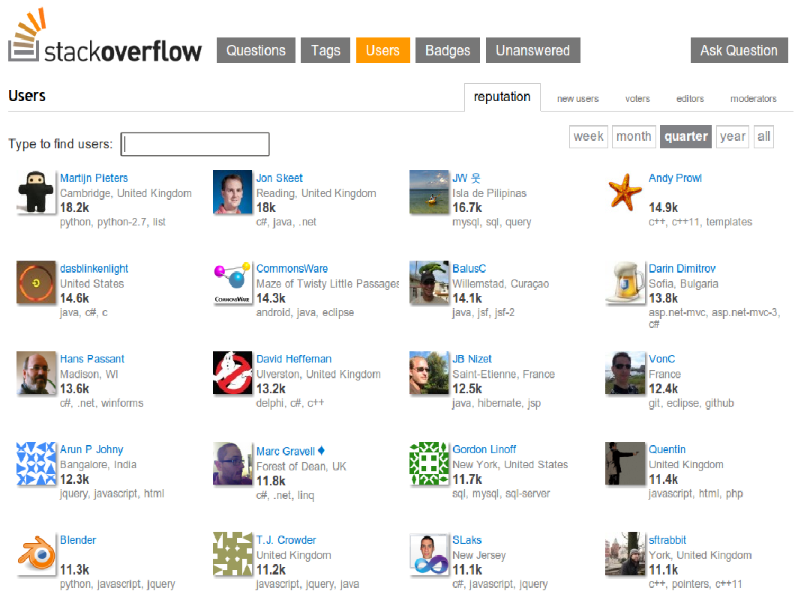

Your browser doesn't support the features required by impress.js, so you are presented with a simplified version of this presentation.
For the best experience please use the latest Chrome, Safari or Firefox browser.
Open Parliament in The Clouda
"Light will overcome darkness only when we realize that
instead of fighting darkness,
we should strengthen the light"
A.D. Gordon
Oknesset 19.0 Party
The State of Now
A place to debate, code
and monitor the state
A place to debate, code
and monitor the state
An open process to debate, code
and monitor the state
Debating


How Many MKs Does it take to approve a law?
Monitoring
Giving Enough Eyeballs,
All Bugs Are Shallow - Linus's Law
What we've done so far
- Presence – In the house and in committees
- Members - Bio, Activity stream and map
- Bills – Activity stream, public voting and comments
- Protocols – Annotations and bookmarking
- Agendas – Collecting good and bad bills
- Motions – empowering citizens
What's Next
- Representatives – support our power users:
- Add Events
- Join Motions
- Chair a Committee
- Users – Make it personal:
- Agendas
- Motions
- Open Letters
- Reputation
- I18N and L10N